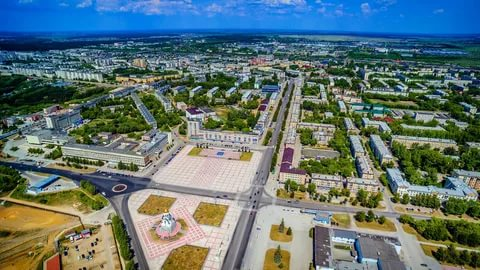
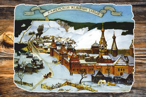

Этот город огня и металла,
Что поднялся над спинами скал,
Дорог мне
Как частица Урала,
Без которой немыслим Урал.
Л. Сорокин
 Города – как люди: у каждого своя судьба, свой неповторимый самобытный облик. И, конечно же, свой характер. Каменск-Уральский не исключение. Каменск-Уральский – один из старейших промышленных городов Урала. Он основан в 1701 году. Многое нашло отражение в облике города за более чем триста лет, которые он уже существует. Он родился, чтобы стать кузницей оружия, и этим предварил будущую славу Урала – опорного края державы. Артиллерийские орудия, отлитые на казенном Каменском чугунолитейном заводе – первенце уральской металлургии, впервые дали громко знать о себе 27 июня 1709 года в день исторической Полтавской битвы, когда русские войска под командованием Петра I наголову разбили сильную по тем временам шведскую армию, обеспечив победу России в Северной войне. Много лет спустя Каменские пушки «участвовали» в Отечественной войне 1812 года. В память о своих предках, пушечных дел мастерах, каменские рабочие отлили и поставили 6 октября 1967 года на высоком берегу реки Каменки копию тех первых знаменитых орудий.
Интенсивное промышленное строительство в XX веке привело к бурному росту населения Каменска. В начале 1931 года Совнарком СССР принял решение о строительстве на Урале трубного завода. Местом для его строительства была выбрана станция Синарская. Строительство началось1 апреля 1931 года, а ровно через три года, 1 апреля 1934 года был введен в эксплуатацию цех фасонных соединений трубопроводов. Этот день считается днем рождения Синарского трубного завода. Вместе со строительством СТЗ началось возведение Уральского алюминиевого завода. Старт стройке был дан 17 августа 1932 года. Примечательно, что все технологическое оборудование для УАЗа было изготовлено на отечественных предприятиях. В марте1939 года дала первый ток заводская ТЭЦ (в 1940 году выделена в самостоятельное предприятие – Красногорскую ТЭЦ). Первый алюминий был получен 5 сентября 1939 года – эта дата считается днем рождения завода.
Каменск рос. Расширялась его территория, увеличивалось население, усложнялась инфраструктура. В 1934 году Уральская область постановлением ЦИК СССР была разделена на Свердловскую, Челябинскую и Обь-Иртышскую. 20 апреля 1934 года ЦИК принял постановление о преобразовании Каменского поселка в город Каменск. 6 июня 1940 года он был переименован в Каменск-Уральский и стал самостоятельной административной единицей областного подчинения. К этому времени город обладал уже значительным промышленным потенциалом, который проявил себя в период суровых испытаний Великой Отечественной войны. Все 1418 дней Великой Отечественной войны участвовали в тяжелом ратном труде каменцы. Более 30 тысяч человек послал тогда город в армию. 8370 из них награждены орденами и медалями. На полях сражений геройски погибли почти 10000 человек. Каменцы самоотверженно сражались против немецко-фашистских захватчиков на фронте и в тылу.
Во время войны в Каменск-Уральский были эвакуированы предприятия: Кольчугинский калиево-магниевый завод из Владимирской области – в городе родилось новое предприятие – завод по обработке цветных металлов (ОЦМ); завод № 268 из г. Ступино дал жизнь Каменск-Уральскому металлургическому заводу (КУМЗ); СТЗ и УАЗ увеличивали свои мощности – УАЗ остался единственным предприятием в стране по производству алюминия и его сплавов. Эвакуация ускорила создание Каменск-Уральского литейного завода (завода № 286 наркомата авиационной промышленности).
В послевоенные годы внешний облик Каменска-Уральского неузнаваемо изменился. В 1948 году был утвержден первый генеральный план застройки города, реализация которого предполагала интенсивное строительство и постепенное преодоление исторически сложившейся обособленности районов города. Город менялся не только внешне. Улучшались условия жизни горожан. Более насыщенной становилась и культурная жизнь города. В начале 60-х гг. открылись Дворец школьников УАЗа, Дворец культуры «Юность» радиозавода, а в 1969 году – ДК «Металлург» КУМЗа. Крупным культурным центром стал Дом политического просвещения (с 1991 года – Социально-культурный центр).
Культура – основа духовного здоровья нации. Каменск-Уральский театр драмы – один из старейших на Урале. Его постановки уже многие десятилетия вызывают глубокие симпатии у зрителей. Каменцы бережно сохраняют и приумножают русские народные традиции. В городе и за его пределами известны такие коллективы народного творчества, как ансамбль русской песни и танца Дворца культуры «Юность» (основан Заслуженным работником культуры РФ, Почетным гражданином города А.П. Устьянцевым), ансамбль русской песни «Горенка», ансамбль народной песни «Казачья пристань» и многие другие.
Три столетия Каменска-Уральского нашли отражение в облике 80 памятников истории и культуры. Среди них – уникальные архитектурные ансамбли и сооружения, связанные с важными для города историческими событиями. Каменск-Уральский имеет неповторимый облик. Возникший как завод-крепость, он сохранил колорит минувших столетий и вместе с тем приобрел новые черты современной цивилизации.